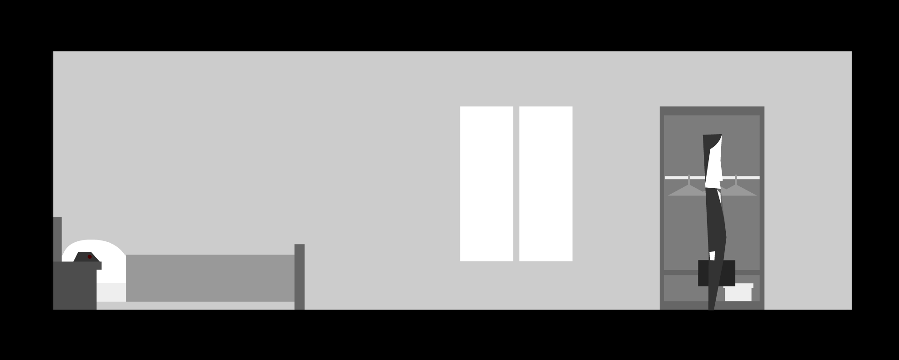
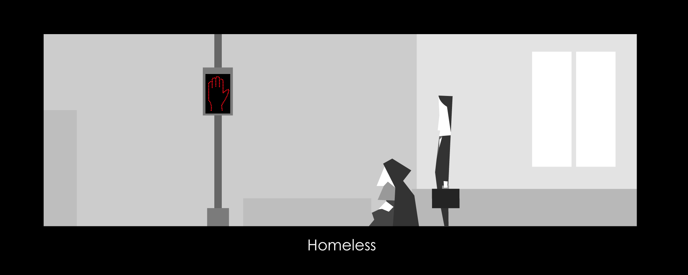
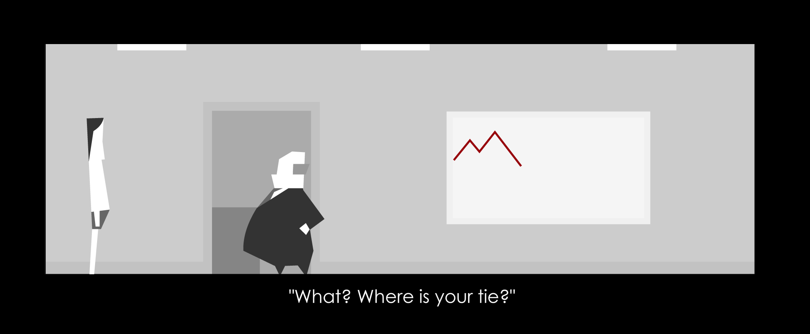
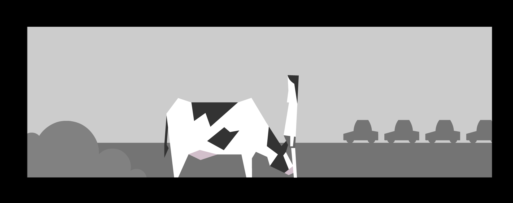
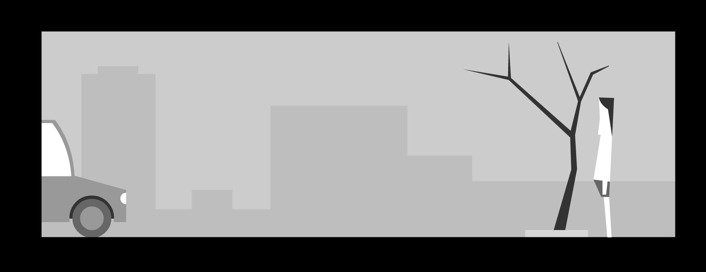
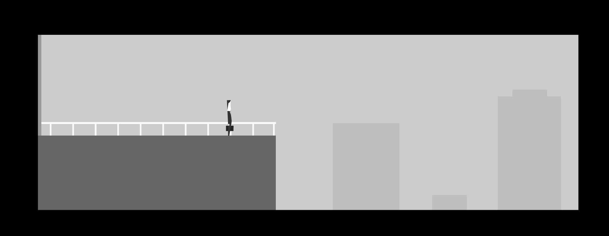
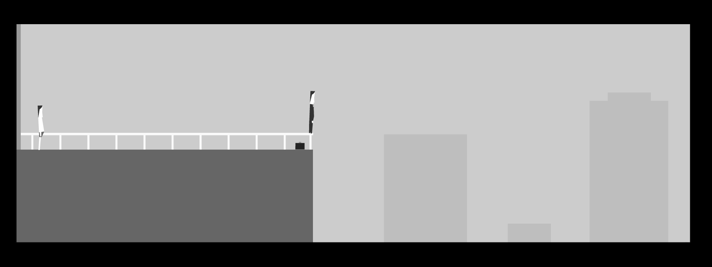

Every Day the Same Dream
1. How does the allowed interaction keep the narrative on track? How does it permit variations and branches?For this interactive narrative, their are quite a few restrictions because you can only use the left and right arrow keys and space bar. There are also only a limited set of things that could be interacted with. Even though this can be quite restrictive, it also keeps the narrative on track because there aren't many ways the player can stray from the path because of the limits placed on the interaction. The goal is never explicitly stated because you start off just doing whatever you want, but the simplistic nature helps to keep the narrative on track and makes sure nothing is too complicated. Any interactions possible are only related to the narrative as well, so there is no chance of really straying from the path. Despite the limitations and the set ending, there are still a lot of variations and branches for how you play it. This includes things like the order in which you do the interactions, how many interactions you choose to do, how many times you want to repeat it, etc. These aspects will be different depending on the player and are unique to each's playthrough. One of the things I liked to do was create different combinations of interactions to see how different things played out, so there were many variations as to what happened depending on what you do first, etc.
2. Describe the nature of the graphical quality and how it is relevant to the story.The nature of the graphical quality is minimalistic and very simple and clean. There aren't a lot of details in the art, but you can still tell what things are. It is relevant to the story because the style conveys the same message as the title, "Every Day the Same Dream," which gives off a monotone and bland depiction of a man who lives a boring routine life of waking up, commuting, and going to work. The art style matches this theme of this life where nothing exciting happens, just like in the art how everything is monochromatic colours of mostly black, grey, white. Overall, it is relevant to the story because it helps provide an aesthetic to the theme and carry further/emphasize the simple and monotome idea of the story.
3. Describe the nature of the interaction and how it influences choices and how the player feels. The nature of the interaction contributed to the simplistic and linear nature of the game and helped emphasize the main themes. It made me feel a bit unsatisfied with every playthrough because I wanted to do so much more. There were many things I would have loved to interact with. I also felt extremely curious with these interactions because there were so many possible combinations of interactions and orders and I never knew just what one thing could do to affect the story. Would walking out in my underwear alternate the future? How? After my first playthrough, I started to change how I interacted with the game. It influenced my choices because I wanted to explore all the possible endings and variations. I wanted to see how different things would play out if I changed even one thing throughout the story. I repeated the story a lot with little alterations in order to see if I could discover something new within the plot. Every cycle, I was very intrigued. I experienced a few different alternate endings and each were fun to experience. By the end of all my plays, I started to analyze my own little daily interactions throughout my routines and what would happen if I were to change even one little thing. What would happen?
Choices of Narrative First Playthrough

1. I am in a bedroom with an alarm clock, bed, window, and wardrobe. I walk to the right until I am in a room with a TV flashing and a lady cooking in the kitchen.
2. The lady tells me, "Dress up, you're late." and I walk back left to the first room.
3. I stand in front of the wardrobe and press space bar. I put on a suit. I walk back to the right to the room with the TV.
4. I walk to the right past the TV and the lady who is my wife. I then reach the next room.
5. There is an elevator to the right and walk towards it. I stand in front of the button and press the space bar.
6. The elevator doors open and there is a lady inside the elevator. I walk in front of it and press space bar.
7. I walk to the elevator lady and press space bar. She tells me if I walk five more steps, I will become a new man.
8. I am out of the elevator and now what seems to be outside. I head to the right.
9. I am in a car and drive in a path to the right inbetween a line-up of cars.
10. I get out of my car and there is a tree with one leaf blowing. I walk to the right past it.
11. I am at work and my boss tells me that I'm late. I talk to him and he tells me to go to my cubicle. I keep walking to the right.
12. There are cubicles lined up one after the other. I keep walking past them. There are more cubicles and I keep walking right.
13. There is an empty cubicle and I walk up to it and press space bar. The screen returns back to the beginning.
Second Playthrough

1. I do everything the same as the first playthrough but this time I put on clothes right at the beginning and walk past the TV, wife, and go to the elevator.
2. I go down and instead of turning right to drive to work, I turn left.
3. There is a homeless person standing beside a pedestrian "Stop" sign.
5. I approach the homeless person and press space bar.
6. She says she can take me to a quiet place.
7. I end up at a cemetery and then the screen returns back to the beginning where I am in my room.
Third Playthrough

1. I do everything the same as the first playthrough but this time I do not put on clothes and walk past the TV, wife, and go to the elevator.
2. This time, the elevator lady tells me four more steps and I will become a new man.
3. I exit the elevator and go right, drive the car, walk past the tree, and go to work.
5. My boss asks where my tie is and fires me.
6. The screen cuts back to the beginning where I am in my room.
Fourth Playthrough

1. I do everything the same as the first playthrough but this time I do not put on clothes and walk past the TV, wife, and go to the elevator.
2. This time, the elevator lady tells me three more steps and I will become a new man.
3. I exit the elevator and go right, drive the car, however in the middle of driving I get out of my car halfway and walk to the right.
5. There is a cow and I approach it, pressing space bar. I take out my hand to pet it.
6. The scene ends and I walk back to the left to the car. I get back in and continue driving to work.
7. My boss fires me after asking where my tie is.
8. The screen cuts back to the beginning where I am in my room.
Fifth Playthrough

1. I do everything the same as the first playthrough but this time I do not put on clothes and walk past the TV, wife, and go to the elevator.
2. This time, the elevator lady tells me two more steps and I will become a new man.
3. I exit the elevator and go right, drive the car, and approach the tree with one leaf blowing.
5. The leaf blows off the tree and I approach the leaf falling and press space bar.
6. I catch the leaf and continue to the right where my boss fires me after asking where my tie is.
7. The screen cuts back to the beginning where I am in my room.
Sixth Playthrough

1. I do everything the same as the first playthrough but this time I put on clothes right away and walk past the TV, wife, and go to the elevator.
2. This time, the elevator lady tells me one more final step and I will become a new man.
3. I exit the elevator and go right, drive the car, and arrive at work.
4. I am at work and my boss tells me that I'm late. I talk to him and he tells me to go to my cubicle. I keep walking to the right.
5. There are cubicles lined up one after the other. I keep walking past them. There are more cubicles and I keep walking right.
6. There is an empty cubicle and I walk past it towards the far right where there is an exit.
7. I am on a rooftop and there is a ledge.
8. I approach the ledge and there is an option to jump. I press space bar and jump off the ledge.
9. The screen cuts back to the beginning where I am in my room.
Final Playthrough

1. I wake up and put on clothes. I exit the room and enter the next room.
2. My wife is gone. I go to the elevator and no one is there inside anymore.
3. I exit the elevator and go right. There are no other cars on the road. It is just me driving alone.
4. I walk past the tree with no leaves and enter the work building.
5. My boss is no longer there. No one is in the other cubicles working as I continue to walk right.
6. I continue walking until I reach the rooftop balcony. I see someone standing on the edge. As I approach, they jump off.
7. The game ends.